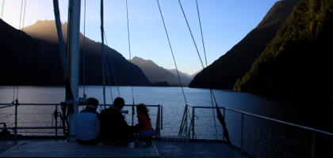
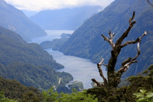
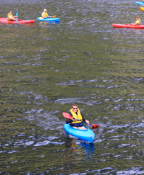
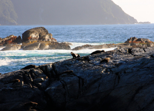

The Fiordland

På tur på Doubtful Fiord
onsdag den 30. januar 2008

Jeg ligger i min ret så smalle overkøje på det gode skib Fiordland Navigator og tænker på en alletiders naturdag. Vi er på udflugt på Doubtful Sound, som slet ikke er et sund men en fjord, da området er dannet af gletchere og is. 20 istider og flere millioner år skulle der til før området så ud som i dag, men til gengæld er stedet uændret siden først Abel Tasman og siden den legendariske Captain Cook besøgte stedet. Fjorden har i øvrigt fået sit navn af sidstnævnte, da han var meget i tvivl, om han nogensinde ville slippe ud igen, hvis han sejlede ind.
Men tilbage til starten på dagen. Vi vågnede halvsent (dvs ved halvotte tiden) i Te Anau. Vejret var skønt, så både Camilla og jeg sneg os til en dejlig løbetur langs søen. Vi skulle tjekke ind i Manapouri kl. 12, så ved elleve tiden startede vi det store camping ritual med påfyldning og tømning af diverse tanke.

Doubtful Fiord er ret svært tilgængelig. Først skal man sejle en time over den store Lake Manapouri, derefter en time med bus over Wilmot Pass, på en grusvej, der ender blindt i begge ender (vejen blev oprindelig bygget at transportere materiel til det store vandkraftværk ved søen), før man ankommer til Deep Cove. til gengæld er vi de eneste turister i området i det næste døgn!
Fiordland Navigator er et smukt kongeblåt skib, der både fører sejl og går for motor. Vi er vel ca. 60 passagerer ombord, og vi er utrolig heldige med vejret. Det regner over 200 dage om året, og her falder mere end 7 meter regn, men i dag er vejret smukt. Vi letter anker og sejler ud mod det Tasmanske hav. Efter en halv time går motoren pludselig i tomgang. Det er fordi vores skipper har spottet en stor gruppe Bottlenose delfiner, som svømmer langs skibet. De er blandt de største delfiner i verden, og de er tydeligvis legesyge, for de springer og hopper helt ud af vandet. Det er et syn man aldrig bliver træt af, og vi har lyst til at hoppe i vandet til dem.

Vi fortsætter turen ud mod havet, mens vi får serveret dejlig varm kartoffelsuppe. Skibet stopper igen, og endnu en gang er det en gruppe legesyge delfiner, der boltrer sig lige ved siden af båden. De hoppe og pruster og ser ud til at have det ret sjovt.

Himlen er nu helt klar og vinden er løjet af som lovet. Det er tid til aftensmad, som vi nyder mens solen går ned over fjorden.
Man bliver træt af den megen friske luft, og vi tørner ind ved ti tiden, men jeg er nødt til lige at skrive mine tanker ned inden jeg sover.
Dag 2:
Der er morgenmad kl. 7, så vi skal noget tidligere op, end vi plejer. Pigerne skal vækkes, hvilket de ikke er specielt tilfredse med. Vejret er stadig flot, så efter at vi har spist, går vi op på dækket. Det er ganske koldt, men stadig uforståelig smukt. Vores naturguide fortæller den maoriske historie om, hvordan Fjorden er opstået, mens vi stille sejler afsted. Han slutter af med at sige, at han har en sidste overraskelse i ærmet til os. Vi sejler ned til bunden af en af fjordens “arme”. og her slukker kaptajnen for samtlige motorer, så der bliver fuldstændig stille. Vi lytter til fuglene og vandfaldene, mens vi kigger på et stykke natur, der ikke har ændret sig i mange tusinde år. Der er dømt gåsehud over hele kroppen. Selv Stella bliver grebet af øjeblikket og sidder helt stille og kigger. Efter 5 minutter bryder naturguiden stilheden, og siger at sådanne øjeblikke sætter tingene lidt i relief: “Mange af jer taler om at I skal tilbage til den virkelige verden, når ferien er forbi. Men det her er den virkelige uberørte verden, resten er kunstigt skabt med larm og burger restauranter. Jeg håber I tager dette øjeblik med jer hjem i jeres hjerter, for, når jeres børn og deres børn kommer tilbage hertil, vil der se ud præcis som nu.”
Vi sejler videre og er alle lidt høje af oplevelsen, og som afslutning, kommer der selvfølgelig en lille pingvin svømmende forbi.
Turen til Doubtful Sound har været fantastisk, og helt klart et af turens højdepunkter, som bliver svært at overgå!
/Tim
Aftenstemning på topdækket af Fiordland Navigator, mens solen går ned over bjergtoppene. Så bliver det ikke meget smukkere.